GPU Based Explicit solver
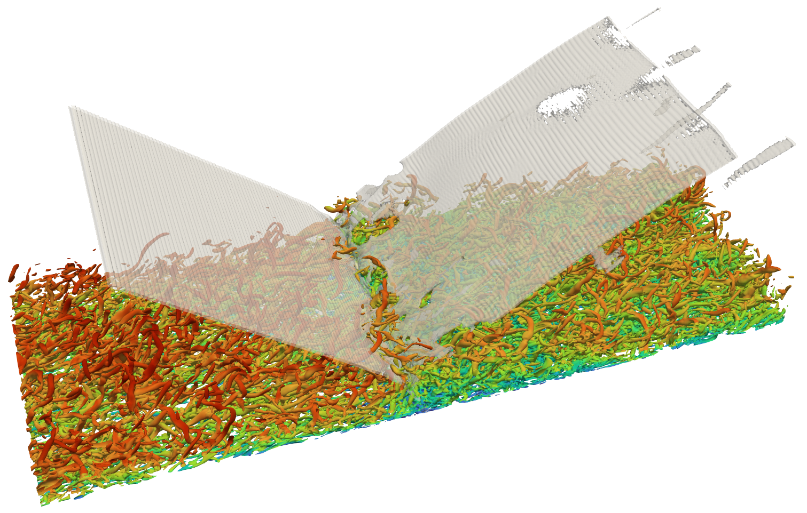
GBEX (GPU Based Explicit solver) is a CFD code solving large-scale simulations quickly by temporal and spatial explicit schemes. It aims to simulate shock-boundary layer interaction (SBLI), which requires both monotone schemes which are enable to capture shock waves and high-order accurate schemes resolving turbulent vorticies. Moreover, the large computational domain must be used to resolve three-dimensional flow structures caused by SBLI. To satisfy these requirements, it has been parallelized on GPU and written in CUDA Fortran. If necessary, MPI can be used.
Numerical method
Convective term
SLAU scheme
Simple and Low-dissipation AUSM (SLAU) was developed by E Shima and K Kitamura. It is robust to strong shocks and doesn't require matrix multiplication, which means simple.
HR-SLAU2 scheme
High Resolution-SLAU2 was developed by K Kitamura and A Hashimoto. Its pressure term contains less numerical viscosity than SLAU scheme and is more robust to strong shock than SLAU.
KEP scheme
Kinetic Energy Preserving scheme was developed by A Jameson. Its formulation is quite simple, therefore it was widely used.
KEEP scheme
Kinetic Energy and Entropy Preserving scheme was developed by Y Kuta and S Kawai. Its discritization of energy equation was more sophisticated than KEP scheme. Since analitical relationship is satisfied, it preserves not only kinetic energy but also entropy.
MUSCL interpolation
3rd-order TVD MUSCL, 3rd-order MUSCL, 4th-order compact TVD MUSCL and 5th-order compact MUSCL have been implemented. Minimod limiter is available for TVD schemes.
Viscous term
ME4-Base and conservative flux derivative of midpoint are available.
Validation
- Euler vortex convection
- Result
- Visualization
- Grid convergence
- Sod shock tube
- Result
- Visualization
- Shu-Osher problem
- Result
- Visualization
- Inviscid 2D double shear layer
- Result
- Visualization
- Inviscid 3D Kelvin-Helmholtz instability
- Result
- Visualization
- 3D viscous Taylor-Green vortex
- Result
- Visualization
- Evolution of kinetic energy and enstrophy
- M=1.9 supersonic turbulent boundary layer
- Result
- Visualization
- Log-law
- Reynolds stress
- TKE budget
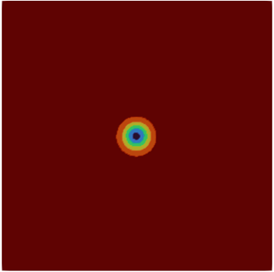
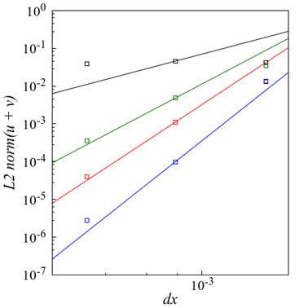
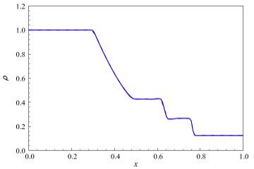
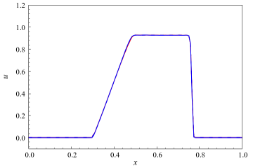
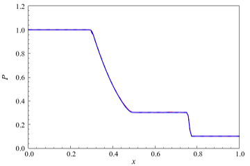
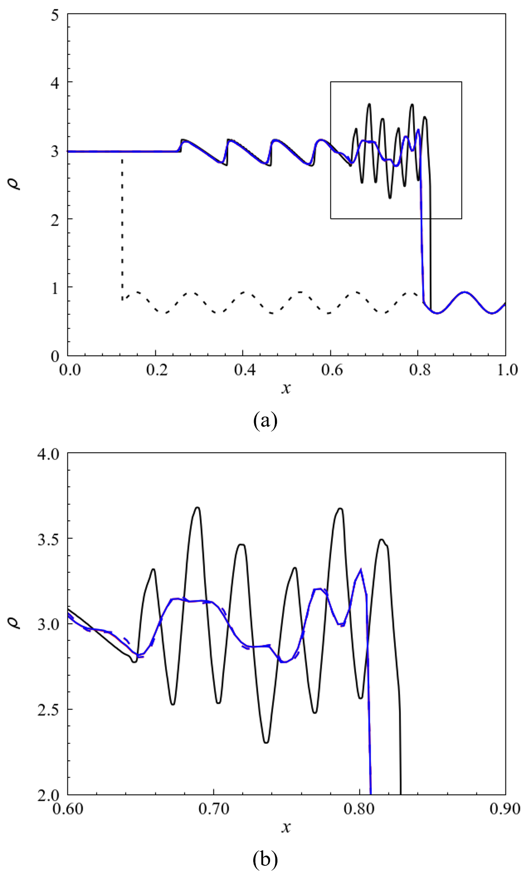
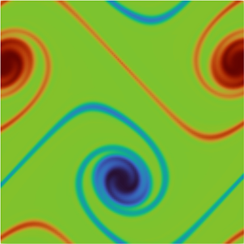
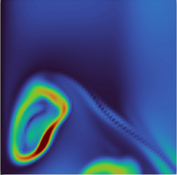
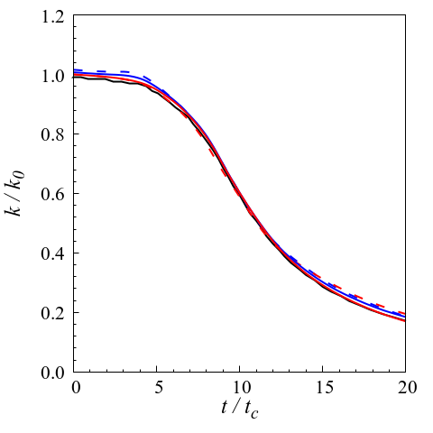
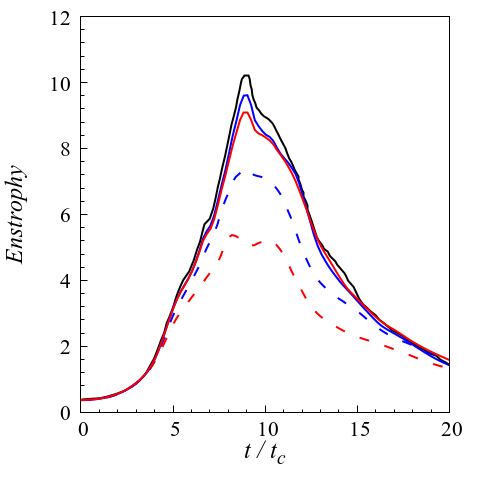
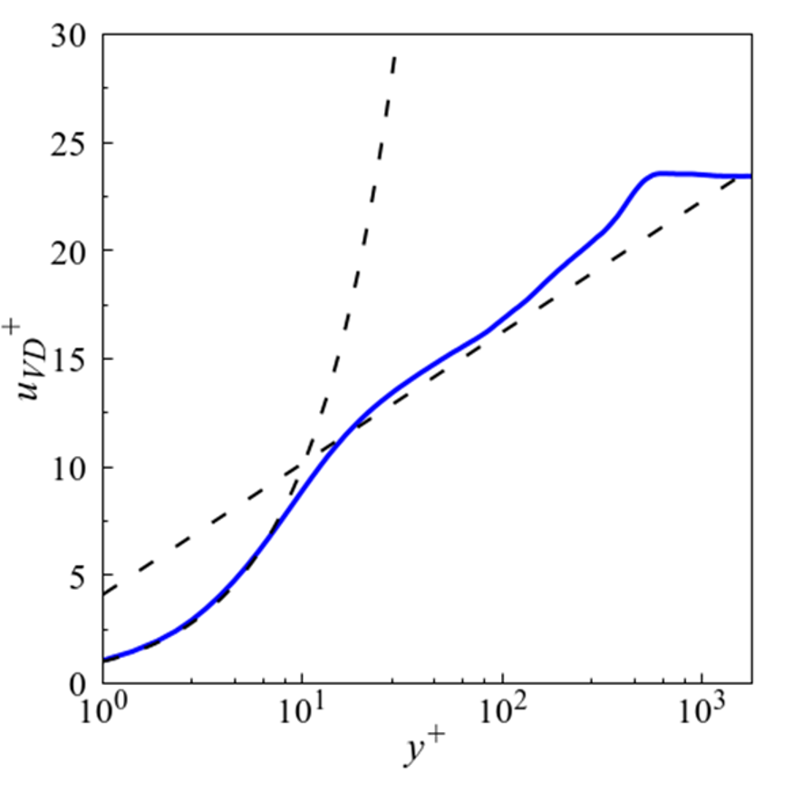
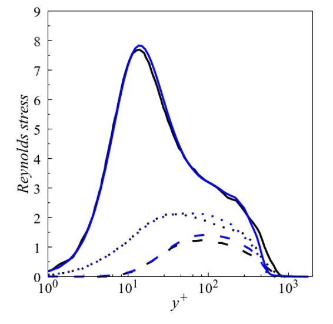
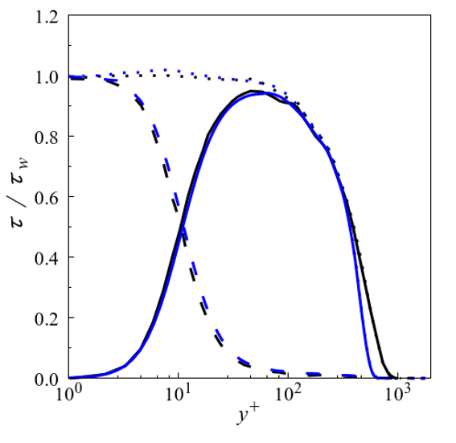
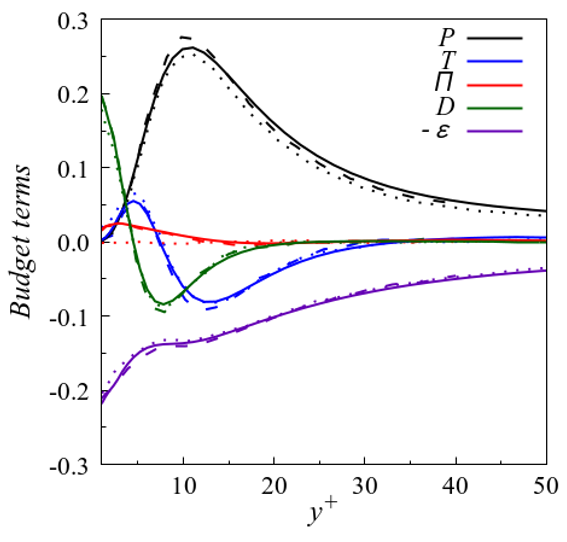
Reference
- Yuichi Kuya, Kosuke Totani, Soshi Kawai, Kinetic energy and entropy preserving schemes for compressible flows by split convective forms, Journal of Computational Physics, 2018
- Yuichi Kuya, Soshi Kawai, High-order accurate kinetic-enrgy and entropy preserving (KEEP) schemes on curvilinear grids, Journal of Computational Physics, 2021
- Christian T. Jacobs, Satya P. Jammy, Neil D. Sandham, OpenSBLI: A framework for the automated derivation and parallel execution of finite difference solvers on a range of computer architectures, 2017
- Yves Allaneau, Antony Jameson, Direct Numerical Simulations of a Two-Dimensional Viscous Flow in a Shocktube Using Kinetic Energy Preserving Scheme, 2012
- Yoshiharu Tamaki, Soshi Kawai, Wall-modeled LES of transonic buffet over NASA-CRM using Cartesian-grid-based flow solver FFVHC-ACE, 2023
- CUDA FORTRAN PROGRAMMING GUIDE AND REFERENCE, 2017